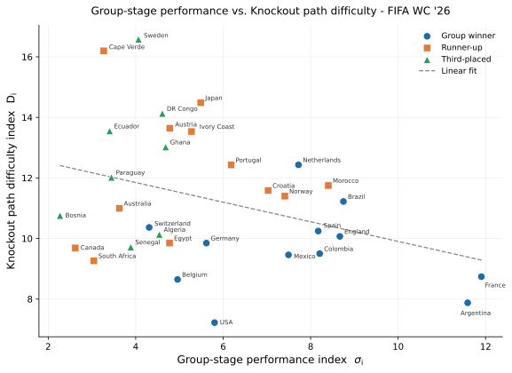

Did the teams that played best in the group stage actually earn easier knockout paths? Using a strength-weighted difficulty index over the entirely pre-drawn 2026 bracket, the answer is: barely. The draw turned out no fairer than pulling names from a hat.
01 Introduction
The FIFA World Cup 2026 had pairings that were opaque, predeterministic, and questionable. Long before a single match was played — indeed, before the identity of a single qualifier was known — the entire architecture of the knockout stage had already been fixed. Teams did not earn positions in the bracket so much as they fell into slots that had been drawn up in advance, and the consequences of landing in one slot rather than another were neither uniform nor, in any obvious sense, deserved.
Context
The 2026 edition was the first contested under an expanded 48-team format, staged across the United States, Canada, and Mexico between 11 June and 19 July. The nations were divided into twelve groups of four, each played as a single round robin. Group winners and runners-up advanced automatically, filling twenty-four of the thirty-two knockout berths; the remaining eight went to the best third-placed teams, ranked across all groups by points, then goal difference, goals scored, and disciplinary record. The expansion introduced a new opening round — the Round of 32 — and with it five successive rounds of single elimination.
Crucially, the mapping from group-stage outcome to bracket position was deterministic and published in advance. Each pathway — winner of Group A, runner-up of Group F, and so on — corresponded to a fixed position in the tree, and the eight third-placed qualifiers were assigned by a lookup table keyed to which groups they emerged from rather than to their merit. No lots were drawn once the group stage concluded. A bracket so fixed honours the principle that position should follow from preliminary performance — that doing better never yields a harder path — only insofar as its structure happens to match the strength distribution that materialises.
02 Group Difficulty Index
We first want to know how tough each group was — but measured before a ball was kicked, so that the tournament's own results can't quietly sneak into the judgement. For this we use the final FIFA ranking published on the eve of the tournament. It has been Elo-based since 2018, which means it measures how strong a team actually is, not merely what order the teams fall in.
A ranking, though, only gives us a position, not a strength. So we turn each team's rank \(k\) into a strength score:
with the 48 teams re-indexed \(k = 1,\dots,48\). Why a logarithm? Because the gap in real strength between the 1st and 2nd best teams in the world is far larger than the gap between the 41st and 42nd, even though each is “one place.” The log captures that: it makes rank gaps count by ratio, so moving from 1st to 2nd matters about as much as moving from 20th to 40th. The shift \(c = 6\) is there to keep a single top seed from dominating. In reality the very best teams are bunched tightly together, and without the shift the world number one on its own would make its group look far harder than it truly was.
A group's difficulty is then simply the average strength of its four teams, rescaled so that a perfectly average group scores exactly \(1\):
We deliberately let a team count itself in this average. A top seed is placed, by design, among weaker opponents — so including it is exactly how we capture the head start that the seeding hands it.
| Group | Teams (by FIFA rank) | \(\Gamma_g\) |
|---|---|---|
| A | Mexico, South Korea, Czechia, South Africa | 0.781 |
| B | Switzerland, Canada, Qatar, Bosnia & Herz. | 0.582 |
| C | Brazil, Morocco, Scotland, Haiti | 1.151 |
| D | USA, Türkiye, Australia, Paraguay | 0.907 |
| E | Germany, Ecuador, Ivory Coast, Curaçao | 0.851 |
| F | Netherlands, Japan, Sweden, Tunisia | 1.016 |
| G | Belgium, Iran, Egypt, New Zealand | 0.918 |
| H | Spain, Uruguay, Saudi Arabia, Cape Verde | 1.090 |
| I | France, Senegal, Norway, Iraq | 1.215 |
| J | Argentina, Austria, Algeria, Jordan | 1.195 |
| K | Portugal, Colombia, DR Congo, Uzbekistan | 1.124 |
| L | England, Croatia, Panama, Ghana | 1.171 |
Table 1Group difficulty index \(\Gamma_g\) from pre-tournament FIFA rankings (teams in rank order).
The toughest draws turned out to be Groups I, J, L, C and K, while B and A were the softest.
03 Group Stage Performance Index
Next we measure how well each team actually played once the tournament began. We start from league points, and add a small bonus for goal difference as a secondary metric:
We then multiply by the group's difficulty, so that the same seven points are worth more when they were earned in a hard group than in an easy one. The raw standings we begin from are in Table 2, and the resulting performance scores \(\sigma_i\) in Table 3.
Table 2Final group standings (Source: ESPN).
| Team | Grp | Band | \(p_i\) | \(\Gamma_g\) | \(\sigma_i\) |
|---|
Table 3Group stage performance index \(\sigma_i\) for the 32 qualifiers, ranked best to worst. Band: W winner, R runner-up, 3rd third-placed.
04 Knockout Path Difficulty Index
This is the heart of the paper: how hard is each team's road to the trophy? To lift it, a team has to win five knockout rounds in a row, and with every round the set of teams it might run into grows — one possible opponent in the Round of 32, two in the Round of 16, four in the quarter-finals, and so on, doubling each round.
We don't treat all of those possible opponents as equally important. Each one counts only a quarter as much as an opponent one round nearer:
That factor of four comes from two reasons stacked on top of each other. First, the opponent right in front of you matters far more than some hypothetical final opponent you may never even reach — the immediate draw is what really makes a bracket brutal. That is one halving. Second, because the number of possible opponents doubles every round, we have to halve each one's weight again, simply so that a distant round doesn't pile up influence through sheer numbers. Halve for nearness, halve for count, and we land on a quarter per round. The upshot is that a team's very first opponent, in the Round of 32, already accounts for more than half (51.6%) of the whole score.
Adding up the strength of every team you could possibly meet, each discounted by how far off it is, gives the path difficulty:
where \(\mathcal{O}_i(r)\) is the block of the bracket that team \(i\) would meet in round \(r\). Since every team faces the same shape of bracket, the total weight is identical for all 32 slots — which is what lets us compare \(D_i\) fairly from one team to the next. The full results are in Table 4.
| Team | Grp | Band | \(\sigma_i\) | \(D_i\) |
|---|
| Team | Grp | Band | \(\sigma_i\) | \(D_i\) |
|---|
Table 4Knockout path difficulty \(D_i\), ranked hardest to easiest.
05 Results
Now we can ask the question the whole paper is built around: did the teams that played well in the group stage get rewarded with easier knockout paths? The chart below puts the two numbers side by side — performance \(\sigma_i\) along the bottom, path difficulty \(D_i\) up the side. If the bracket were fair, we would expect a clear downward slope: the better you did, the gentler your road should be. What we actually see is a line that barely tilts down, with teams scattered widely around it.

A downward trend fairly rewards group-stage performance with an easier knockout path. Teams below the line of best fit got a path easier than they had deserved for their group-stage performance, and vice-versa for the ones above.
Putting a number on it, the Spearman rank correlation is only \(\rho = -0.25\). To check whether even that much is real, we shuffled all 32 teams into random slots 20,000 times and re-measured the correlation each time. The actual bracket lands right in the middle of that random pile (the shuffles average \(-0.07\), and our \(-0.25\) is a thoroughly ordinary value within them, \(p = 0.23\)).
In other words, the real draw was no fairer than pulling names out of a hat.
Splitting the teams by how they qualified tells us a little more:
| Band | \(n\) | \(\rho(\sigma,D)\) |
|---|---|---|
| Group winners | 12 | −0.04 |
| Runners-up | 12 | +0.32 |
| Third-placed | 8 | +0.24 |
The runners-up are the real surprise here. Their correlation is positive, which means the better a runner-up played, the harder its path tended to be — the opposite of what fairness would ask for. And the eight third-placed teams, who all squeaked through with near-identical records and were then slotted in by a fixed lookup table, show no real pattern at all.
The seeding paradox
The strangest result sits right at the top. The two best group-stage performers, France and Argentina, were handed two of the three easiest paths in the whole bracket (\(D = 8.7\) and \(7.9\)), while the hardest roads went to Sweden and Cape Verde. But this isn't really a fairness failure — it is seeding doing exactly its job. The strongest teams are deliberately steered away from the other strong teams, so their paths come out easy because they are good, not because they got lucky. This built-in protection tugs the whole picture toward looking fair, while everyone else is scattered almost at random, and the two effects roughly cancel — which is why the overall link comes out so weak.
06 Discussion
Because we let each team count itself in its group's difficulty, the top seeds get a small flattering bump. Our performance score also leans on just three group matches, which is a small and noisy sample. And most fundamentally, \(D_i\) treats the bracket as a gauntlet: it adds up the strength of every team you could meet, without ever asking how likely you are to actually meet them. Also, we don't need a linear trend to be fair, only the direction should be right. A tougher but fairer version would weight each possible opponent by the real chance of the two teams crossing paths — which we can get from Elo win probabilities — instead of a flat quarter per round. For example, Portugal's actual knockout path was harder than we modelled, given that they were likely to face the better teams later, which weren't given adequate weightage. We leave that probabilistic version for future work.
07 Conclusion
So how fair was the 2026 bracket? Our answer is that fairness barely came into it. Path difficulty and group-stage performance turned out to be essentially unrelated (\(\rho = -0.25\), no better than a random draw). The bracket isn't so much unfair as indifferent: your road to the final was decided by where you happened to sit in a pre-drawn tree, not by how well you actually played. Argentina and France were quietly handed the softest routes, while teams that had earned near-identical group records ended up with wildly different draws — nowhere more starkly than among the eight third-placed qualifiers, whose paths bore no relation to their strength at all.
08 References
- FIFA. FIFA/Coca-Cola World Ranking Men. inside.fifa.com/fifa-rankings/world-ranking/men?dateId=FRS_Male_Football_20260401, June 2026.
- ESPN. FIFA World Cup 2026 Group Stage Standings. espn.in/football/table/_/league/fifa.world, July 2026.
- ESPN. FIFA World Cup 2026 Scores and Bracket. espn.in/football/bracket, July 2026.